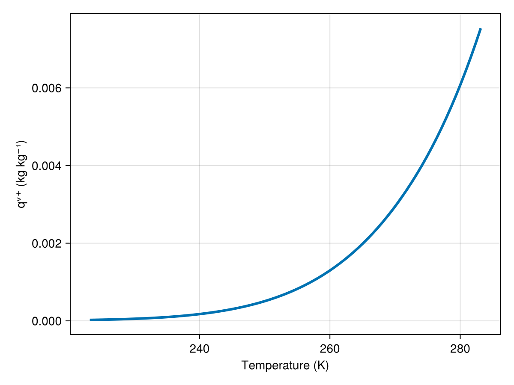
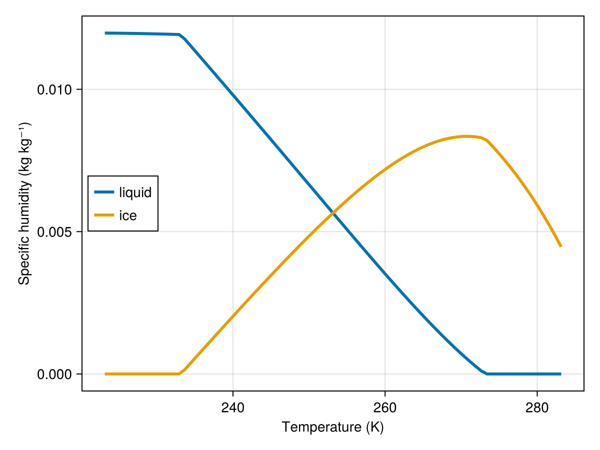

Mixed-phase saturation adjustment
Mixed-phase saturation adjustment extends the warm-phase model to temperatures between the homogeneous ice nucleation temperature and the freezing point, where condensate may exist as a mixture of liquid and ice.
We assume instantaneous adjustment to an equilibrium in which vapor is at or below the saturation specific humidity over a temperature-dependent mixed surface. The mixed surface is parameterized by a liquid fraction $λ$ that varies linearly with temperature between the homogeneous ice nucleation temperature $T^h$ and the freezing temperature $T^f$.
Equilibrium surface model
Let T be temperature. Define the clamped temperature
\[T' = \mathrm{clamp}(T, T^h, T^f) ,\]
where $\mathrm{clamp}(x, x_{\min}, x_{\max})$ limits values of $x$ within range $[x_{\min}, x_{\max}]$, and the liquid fraction
\[\lambda(T) = \frac{T' - T^f}{T^h - T^f} , \qquad \lambda \in [0, 1] .\]
A value of $λ = 1$ corresponds to a pure liquid surface (warm side); $λ = 0$ corresponds to a pure ice surface (cold side). This model yields a mixed-phase surface with effective latent heat and heat-capacity difference that are linear blends of the pure-phase values, consistent with Pressel et al. (2015).
In Breeze, the equilibrium surface is constructed internally via PlanarMixedPhaseSurface(λ) using MixedPhaseEquilibrium, and is accessed by
using Breezeusing Breeze.Microphysics: MixedPhaseEquilibriumFT = Float64thermo = ThermodynamicConstants(FT)# Define equilibrium with default temperatures (Tᶠ = 273.15 K, Tʰ = 233.15 K)eq = MixedPhaseEquilibrium(FT)MixedPhaseEquilibrium{Float64}(273.15, 233.15)Saturation specific humidity across the mixed-phase range
We can compute the saturation specific humidity across the entire range from homogeneous ice nucleation up to freezing using the equilibrium model above:
using Breeze: equilibrium_saturation_specific_humidityp = 101325.0qᵗ = 0.012Tᶠ = eq.freezing_temperatureTʰ = eq.homogeneous_ice_nucleation_temperatureT = range(Tʰ - 10, Tᶠ + 10; length=81) # slightly beyond the mixed-phase rangeqᵛ⁺ = [equilibrium_saturation_specific_humidity(Tʲ, p, qᵗ, thermo, eq) for Tʲ in T]81-element Vector{Float64}:
2.377053474519256e-5
2.6076677427265768e-5
2.8588705622201346e-5
3.1323363759368965e-5
3.429862037572027e-5
3.753374708685489e-5
4.104940193514636e-5
4.4867717315009e-5
4.9012392682486684e-5
5.350879226363462e-5
⋮
0.004971957002848185
0.0052425026646400405
0.005526119163425214
0.00582336024456034
0.006134800308871168
0.0064610351445029005
0.006802682689781641
0.0071603838289523904
0.007534803222792989Optionally, we can visualize how qᵛ⁺ varies with temperature:
using CairoMakiefig = Figure()ax = Axis(fig[1, 1], xlabel="Temperature (K)", ylabel="qᵛ⁺ (kg kg⁻¹)")lines!(ax, T, qᵛ⁺)fig
Liquid/ice partitioning of condensate
Under mixed-phase saturation adjustment, excess total moisture is partitioned between liquid and ice according to the temperature-dependent liquid fraction $λ(T)$ implied by the equilibrium surface. Given total moisture $qᵗ$ and saturation specific humidity $qᵛ⁺(T)$, the condensate amount is
\[q^{\mathrm{cond}} = \max(0, q^t - q^{v+}) , \qquad q^l = \lambda(T) q^{\mathrm{cond}} , \quad q^i = [1 - \lambda(T)] q^{\mathrm{cond}} .\]
# Compute partitioning across temperature rangeT′ = clamp.(T, Tʰ, Tᶠ)λ = @. (T′ - Tᶠ) / (Tʰ - Tᶠ)qcond = @. max(0, qᵗ - qᵛ⁺)qˡ = λ .* qcondqⁱ = (1 .- λ) .* qcondfig = Figure()ax = Axis(fig[1, 1], xlabel="Temperature (K)", ylabel="Specific humidity (kg kg⁻¹)")lines!(ax, T, qˡ, label="liquid")lines!(ax, T, qⁱ, label="ice")axislegend(ax, position=:lc)fig
Notes
- Warm-phase saturation adjustment is recovered for $T ≥ T^r$ ($λ = 1$, all liquid) and ice-phase saturation for
T ≤ Tʰ($λ = 0$, all ice). - The moist static energy in Breeze includes both liquid and ice latent heats in mixed-phase conditions:
\[s = cᵖᵐ T + g z - ℒˡᵣ qˡ - ℒⁱᵣ qⁱ .\]
For details about the saturation adjustment algorithm itself and moist static energy, see the Warm-phase saturation adjustement.